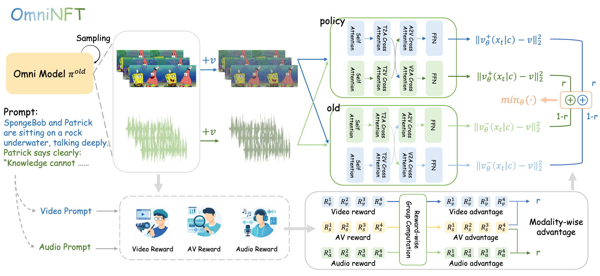

1University of Science and Technology of China 2Peking University 3JD Explore Academy
‡Project leader, †Corresponding author
Recent advances in joint audio-video generation have been remarkable, yet real-world applications demand strong per-modality fidelity, cross-modal alignment, and fine-grained synchronization. Reinforcement Learning (RL) offers a promising paradigm, but its extension to multi-objective and multi-modal joint audio-video generation remains unexplored. Notably, our in-depth analysis first reveals that the primary obstacles to applying RL in this stem from: (i) multi-objective advantages inconsistency, where the advantages of multimodal outputs are not always consistent within a group; (ii) multi-modal gradients imbalance, where video-branch gradients leak into shallow audio layers responsible for intra-modal generation; (iii) uniform credit assignment, where fine-grained cross-modal alignment regions fail to get efficient exploration.
To address these challenges, we propose OmniNFT, a novel modality-aware online diffusion RL framework with three key innovations: (1) Modality-wise advantage routing, which routes independent per-reward advantages to their respective modality generation branches. (2) Layer-wise gradient surgery, which selectively detaches video-branch gradients on shallow audio layers while retaining those for cross-modal interaction layers. (3) Region-wise loss reweighting, which modulates policy optimization toward critical regions related to audio-video synchronization and fine-grained alignment. Extensive experiments on JavisBench and VBench with the LTX-2 backbone demonstrate that OmniNFT delivers consistent and comprehensive improvements.

Figure: Core pipeline of OmniNFT. Fine-grained credit assignment at three levels to overcome the limitations of vanilla RL fine-tuning with a single global advantage.
OmniNFT performs fine-grained credit assignment at three levels to overcome the limitations of vanilla RL fine-tuning with a single global advantage.
Evaluation on JavisBench. Best results highlighted in blue, second-best underlined. (↑: higher is better; ↓: lower is better).
| Model | Size | AV-Quality | Text-Consistency | AV-Consistency | AV-Synchrony | ||||||
|---|---|---|---|---|---|---|---|---|---|---|---|
| VQ ↑ | AQ ↑ | TV-IB ↑ | TA-IB ↑ | CLIP ↑ | CLAP ↑ | AV-IB ↑ | AVHScore ↑ | JavisScore ↑ | DeSync ↓ | ||
| T2A + A2V | |||||||||||
| TempoTkn | 1.3B | -- | -- | 0.084 | -- | 0.205 | -- | 0.139 | 0.122 | 0.103 | 1.532 |
| TPoS | 1.0B | -- | -- | 0.201 | -- | 0.229 | -- | 0.124 | 0.129 | 0.095 | 1.493 |
| T2V + V2A | |||||||||||
| ReWaS | 0.6B | -- | -- | -- | 0.123 | -- | 0.280 | 0.110 | 0.104 | 0.079 | 1.071 |
| See&Hear | 0.4B | -- | -- | -- | 0.129 | -- | 0.263 | 0.160 | 0.143 | 0.112 | 1.099 |
| FoleyCrafter | 1.2B | -- | -- | -- | 0.149 | -- | 0.383 | 0.193 | 0.186 | 0.151 | 0.952 |
| MMAudio | 0.1B | -- | -- | -- | 0.160 | -- | 0.407 | 0.198 | 0.182 | 0.150 | 0.849 |
| T2AV | |||||||||||
| JavisDiT | 3.1B | 1.291 | 4.478 | 0.263 | 0.143 | 0.302 | 0.391 | 0.197 | 0.179 | 0.154 | 1.039 |
| UniVerse-1 | 6.4B | 1.357 | 4.839 | 0.272 | 0.111 | 0.309 | 0.245 | 0.104 | 0.098 | 0.077 | 0.929 |
| JavisDiT++ | 2.1B | 1.462 | 5.049 | 0.282 | 0.164 | 0.316 | 0.424 | 0.198 | 0.184 | 0.159 | 0.832 |
| LTX-2 | 19B | 2.038 | 5.197 | 0.272 | 0.170 | 0.311 | 0.412 | 0.232 | 0.223 | 0.192 | 0.569 |
| T2AV + RL | |||||||||||
| LTX-2 + GDPO | 19B | 3.209 | 5.523 | 0.265 | 0.184 | 0.308 | 0.428 | 0.233 | 0.223 | 0.185 | 0.412 |
| LTX-2 + OmniNFT | 19B | 3.326 | 5.715 | 0.261 | 0.189 | 0.310 | 0.445 | 0.262 | 0.257 | 0.220 | 0.269 |
| Our RL Δ | -- | +1.288 | +0.518 | -0.011 | +0.019 | -0.001 | +0.033 | +0.030 | +0.034 | +0.028 | -0.300 |
Table 1.
Side-by-side comparison: LTX-2 (Baseline) vs. LTX-2 + OmniNFT (Ours). Click to play with audio. Prompts shown are abbreviated for display.
@misc{zhang2025omninft,
title={OmniNFT: Modality-wise Omni Diffusion Reinforcement for Joint Audio-Video Generation},
author={Zhang, Guohui and Ma, XiaoXiao and Huang, Jie and Xu, Hang and Yu, Hu and Fu, Siming and Li, Yuming and Xue, Zeyue and Song, Lin and Huang, Haoyang and Duan, Nan and Zhao, Feng},
year={2025},
eprint={},
archivePrefix={arXiv},
primaryClass={cs.CV}
}